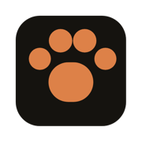
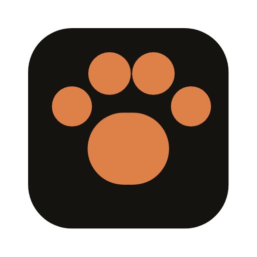

Every build leaves a scent — a slow task, a flaky test, a cache that should have hit and didn't. BuildHound is the identity for a dashboard built to follow that trail.
Pulled straight from each site's served HTML and CSS — meta colors, inline hex, linked font families, favicon SVGs — rather than a visual screenshot pass (the in-browser tool was unreachable during research). Cells marked "—" weren't exposed in static source and would need a manual look to fill in.
| Site | Ground | Accent(s) | Typeface | Mark |
|---|---|---|---|---|
| Develocity | near‑black |
none — monochrome | — | lowercase "d", black‑on‑white for favicon safetybrand‑kit comment left in source |
| Bazel | light docs shell |
green (kept from prior mark, "rooted into identity") |
Roboto + Roboto Mono | interlocking assembled blocks2017 redesign, community‑voted |
| Honeycomb | slate navy |
honey amber + blue |
Inter + Matter | hexagon cell (name‑literal) |
| Datadog | near‑black |
violet + a full 6‑hue status ramp |
Inter | barking dog in a ring |
| Dash0 | neutral charcoal |
coral + mint, used sparingly |
Roobert + a dedicated --type-mono token |
— |
| Depot | off‑white default |
green + blue |
Inter | grid‑of‑blocks glyph, swaps fill for light/dark automatically |
| Kiro | — | violet / lavender |
— | rounded‑square app icon, white glyph on violet |
| Blacksmith | near‑black |
acid lime, one hue only |
— | — |
| Confident AI | cool gray |
magenta + violet |
IBM Plex Mono + Lexend Deca | — |
| Better Stack | navy‑black |
periwinkle indigo |
— | — |
| Tuist | mostly neutral | not distinct in source | Space Grotesk + Space Mono | — |
Develocity tells you a build happened. BuildHound is built around the narrower, more useful question: what in this build is worth chasing? A hound doesn't watch — it tracks. That's a real product difference, not just a mascot.
"Hound" carries tracking, scent, tenacity — and it's a dog, which every build‑tool mascot in this space (Gradle's elephant, Docker's whale) has already normalized as friendly rather than cute. No metaphor stretch required.
Develocity, Dash0, Blacksmith, Better Stack, Bazel's console views — dark, near‑black grounds are the default for anything showing logs and metrics. Fighting that convention buys nothing. BuildHound's charcoal is warm‑biased, not a pure gray, so it sits underneath copper instead of competing with it.
The mistake Datadog's ramp warns against: don't let the identity hue double as a status color. BuildHound's build‑status states — pass, fail, flaky, running, cache hit — get their own separate, purely functional palette. Copper never appears in a status chip.
A build‑telemetry surface is mostly numbers and identifiers: durations, task paths, cache keys, exit codes. Those need a typeface built for tabular alignment, not the display face dressed down. JetBrains Mono is doing real work here, not just "looking technical."
Leading with the paw — it's the most ownable and ties directly to "tracking down what's wrong." The other two are real alternates, not filler, in case the direct read feels too literal once it's on a badge next to Bazel and Gradle's own marks.
A pad and four toes, nothing else. Reads at 16px. The "scent trail" is a lockup device that follows the paw at larger sizes — it never has to be baked into the glyph itself.
assets/logo/paw-mark.svgBazel proved a build‑tool mark can be pure geometry. This one is a straightforward H — for Hound — built the same way a build is: discrete blocks locked together, with one block left "lit" to mark it as live, still assembling.
assets/logo/assembled-h.svgFor a "running" or "just found something" state rather than static branding — concentric rings reading as a hit registering, animated as a single soft pulse (inert for anyone with reduced‑motion set).
assets/logo/scent-ping.svgEvery weight of the paw is the same five shapes, just rescaled — nothing thins out or drops off at favicon size. See assets/favicon/ for the shipped set.
Everything below lives under docs/brand/site/assets/ in the repo — grab it directly, no export step.
Logo
| File | Notes | |
|---|---|---|
| logo/paw-mark.svg | fixed copper fill — safe default for <img> use | |
| logo/paw-mark-mono.svg | currentColor — inherits CSS color when inlined | |
| logo/assembled-h.svg | abstract alternate | |
| logo/scent-ping.svg | running / live‑state alternate | |
| logo/wordmark-lockup-dark.png | rasterized lockup, transparent bg, for dark surfaces | |
| logo/wordmark-lockup-light.png | rasterized lockup, transparent bg, for light surfaces |
Favicon
| File | Notes | |
|---|---|---|
| favicon/favicon.svg | primary — modern browsers | |
| favicon/favicon.ico | multi‑res 16/32/48 fallback | |
 | favicon/apple-touch-icon-180.png | iOS home‑screen icon |
 | favicon/icon-512.png | PWA manifest / large app icon |
Status icons
| File | Notes | |
|---|---|---|
| icons/status-success.svg | build passed | |
| icons/status-failed.svg | build broke | |
| icons/status-flaky.svg | inconsistent test | |
| icons/status-running.svg | build in progress | |
| icons/status-cache-hit.svg | restored from cache | |
| icons/status-cache-miss.svg | rebuilt from source |
Fonts & tokens
| File | Notes | |
|---|---|---|
| Aa | fonts/Fraunces-Variable.woff2 | display — variable, wght 300–900, OFL‑1.1 |
| Aa | fonts/Inter-Variable.woff2 | UI/body — variable, wght 100–900, OFL‑1.1 |
| Aa | fonts/JetBrainsMono-Variable.woff2 | mono — variable, wght 100–800, OFL‑1.1 |
| § | fonts/OFL.txt | bundled license + per‑font copyright notices |
| { } | tokens/colors.css | CSS custom properties — dark default, light + data‑theme overrides |
| { } | tokens/colors.json | same palette as JSON, for non‑CSS consumers |
Every icon is built from the same 2px rounded stroke as the Assembled H mark, so status chips and the logo read as one family instead of a mascot bolted onto a generic icon set.
{kind=link}
{kind=link}
{kind=link}
{kind=link}
{kind=link}
{kind=link}
{kind=link}
{kind=link}
{kind=link}
{kind=link}
{kind=link}
{kind=link}
{kind=link}
{kind=link}
{kind=link}